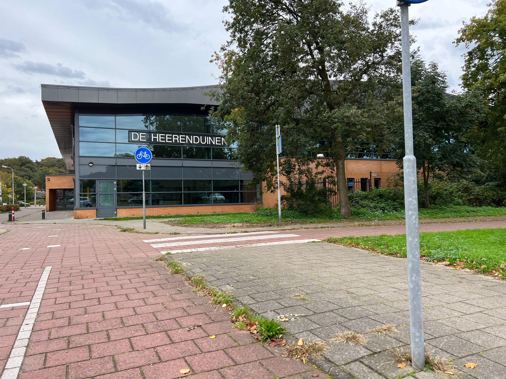
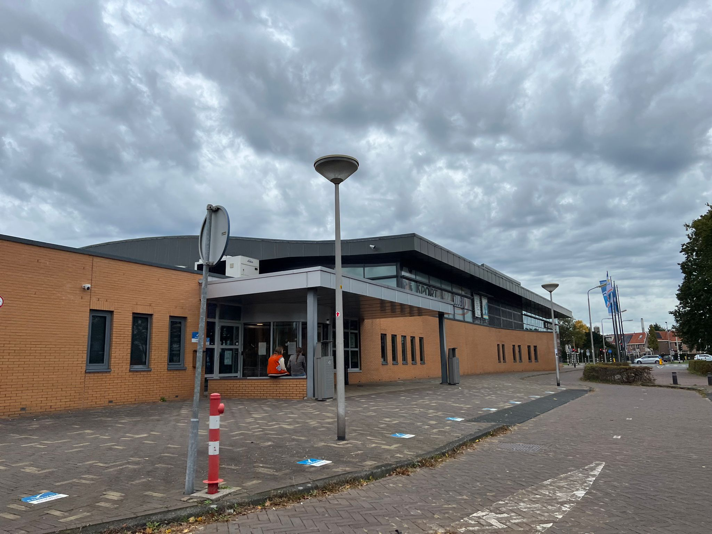
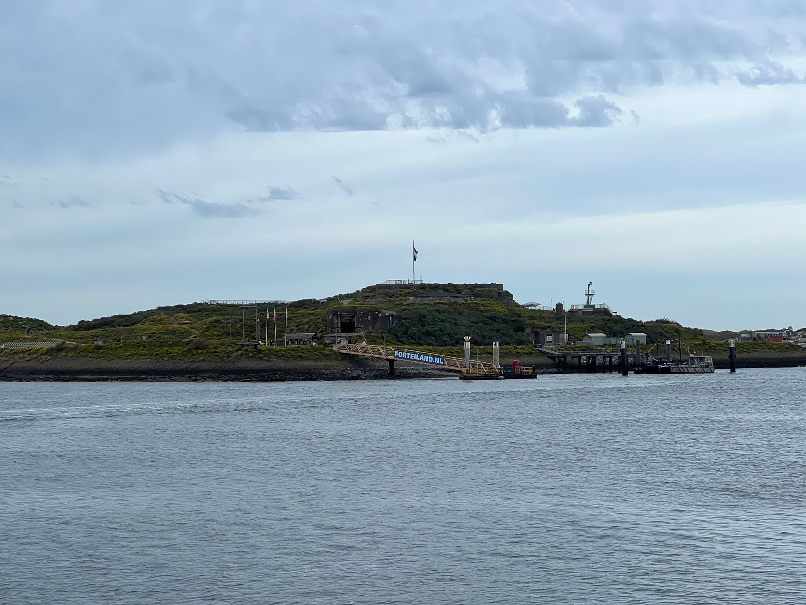

Sportieve actviteiten
Zwembad De Heerenduinen
Wilt u en uw gezin even lekker bewegen? Dan is het zwembad De Heerenduinen een goede optie. Belangrijk om te weten is dat in het recreatiebad (binnen) kinderen met- en zonder zwemdiploma mogen zwemmen. Kinderen zonder zwemdiploma moeten verplicht zwemvleugels dragen en met begeleiding. Daarnaast kunt u op zondagochtend ook gezinszwemmen. De jeugd zonder begeleiding heeft dan nog geen toegang. Let wel op het zwemrooster, er zijn namelijk ook tijden waarbij u niet kunt komen om recreatief te zwemmen omdat er dan bijvoorbeeld alleen maar banenzwemmen is. Als u behoefte heeft aan meer informatie: Link
- 
- 
Forteiland IJmuiden
Een leuke sportieve activiteit is een bezoek aan het Forteiland in IJmuiden. Zo nu en dan wordt er een avontuurlijke dag georganiseerd waarbij u kunt aansluiten en allerlei activiteiten kunt ondernemen. Dat allemaal op dit stukje eiland dat op de Werelderfgoedlijst van Unesco staat. U vaart met de boot naar dit eiland en kunt daar deelnemen aan activiteiten zoals boogschieten, vrije val & de evenwichtsbalk. Daarnaast kunt u ook een historische rondleiding krijgen of zelf het eiland verkennen. Tickets zijn alleen online verkrijgbaar. Als u behoefte heeft aan meer informatie: Link
